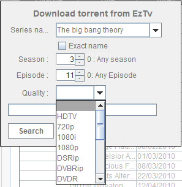

| Download Torrent |
|---|
|  |
| Search torrent form |
Search torrent lets you search eztv.it for a torrent based on :
- The episode title :Select from the combo box one of the series you already watch , or edit it to search
for a new series. Note that some series in eztv database are not entered with their official name , so if nothing is found
try another title (eg 'House MD' will return no results but 'House' will return.)
- Season : The season to search (0 for all seasons)
- Episode : The episode to search (0 for all episodes)
- Quality :The quality to search
After the search if one torrent is found it's saved in the myseries torrents subdirectory and then opened by the default
torrents application.If nore results are found you are prompt to choose the one to save.
|